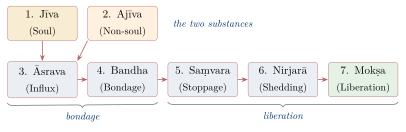
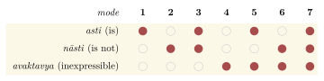

Chapter 11: Jain Philosophy — The Doctrine of Many-Sidedness¶
Tattvārthasūtra
parasparopagraho jīvānām
Souls render service to one another.
— Tattvārthasūtra 5.21
11.1 Introduction: The Path of the Conquerors¶
The Jain philosophical tradition (Jaina darśana) derives its name from Jina (“conqueror”) — one who has conquered attachment and aversion and attained omniscience. Its followers were earlier called Nirgranthas (“those without bonds”). Like Buddhism, Jainism was classified by Brahmanical authors as nāstika because it does not accept the authority of the Vedas. It developed one of the most systematic metaphysics in India, an original logic of perspectives, and an ethics of non-violence of exceptional rigour (Dundas 2002; Jaini 1979).
Three related doctrines are especially associated with Jain philosophy:
-
Anekāntavāda — The doctrine that reality is many-sided (“non-one-sidedness”)
-
Syādvāda — The doctrine of qualified, conditional predication
-
Nayavāda — The doctrine of partial standpoints
Historical Note: Mahāvīra and the Tīrthaṅkaras
Jain tradition recognises twenty-four Tīrthaṅkaras (“ford-makers”) in the present cosmic age. The twenty-second and earlier figures belong to mythic time. The twenty-third, Pārśva, is probably historical and is placed about 250 years before Mahāvīra. The twenty-fourth, Vardhamāna Mahāvīra, was an older contemporary of the Buddha; Jain tradition dates him 599–527 BCE, but most scholars place him later, in the 5th century BCE, in line with the revised chronology of the Buddha. The early Buddhist canon mentions him as Nigaṇṭha Nātaputta.
The community later divided into the Śvetāmbaras (“white-clad”) and the Digambaras (“sky-clad”, whose monks go naked), a division that crystallised in the first centuries CE. The Śvetāmbaras preserve a canon of Āgamas in Ardhamāgadhī Prakrit, finally redacted at the council of Valabhī in the 5th century CE; the Digambaras hold that the original canon was lost and rely on later works such as the Ṣaṭkhaṇḍāgama and the treatises of Kundakunda.
11.1.1 Major Texts and Philosophers¶
Table 11.1 lists the major texts and thinkers.
| Text/Author | Tradition | Date | Significance |
|---|---|---|---|
| Āgamas (e.g. Ācārāṅga, Sūtrakṛtāṅga, Bhagavatī) | Śvetāmbara canon | oldest layers c. 4th–3rd c. BCE; redacted 5th c. CE | Canonical scriptures |
| Kundakunda | Digambara | disputed (c. 2nd–6th c. CE) | Samayasāra, Pravacanasāra, Pañcāstikāyasāra |
| Umāsvāti (Umāsvāmin) | Both sects | disputed (c. 2nd–5th c. CE) | Tattvārthasūtra — first Sanskrit summa of Jain doctrine |
| Siddhasena Divākara | Śvetāmbara | c. 5th c. CE | Sanmatitarka; anekānta and naya theory |
| Samantabhadra | Digambara | c. 6th c. CE | Āptamīmāṃsā; syādvāda |
| Pūjyapāda Devanandin | Digambara | c. 6th c. CE | Sarvārthasiddhi (commentary on the Tattvārthasūtra) |
| Haribhadra | Śvetāmbara | 8th c. CE | Ṣaḍdarśanasamuccaya, Anekāntajayapatākā |
| Akalaṅka | Digambara | 8th c. CE | Systematiser of Jain epistemology |
| Vidyānanda | Digambara | 9th c. CE | Aṣṭasahasrī |
| Prabhācandra | Digambara | 11th c. CE | Prameyakamalamārtaṇḍa |
| Hemacandra | Śvetāmbara | 1088/89–1172 CE | Pramāṇamīmāṃsā |
| Malliṣeṇa | Śvetāmbara | 1292 CE | Syādvādamañjarī |
| Yaśovijaya | Śvetāmbara | 17th c. CE | Jain philosophy in Navya-Nyāya idiom |
Figure 11.1 shows an image of Mahāvīra from a Jain temple.

11.2 Umāsvāti and the Tattvārthasūtra¶
The Tattvārthasūtra (“Sūtra on the Meaning of the Principles”) of Umāsvāti is the only Jain text accepted as authoritative by both Śvetāmbaras and Digambaras, although they read it in slightly different recensions and with different commentaries (the Śvetāmbara Svopajñabhāṣya, ascribed to the author himself, and the Digambara Sarvārthasiddhi of Pūjyapāda). Written in Sanskrit sūtra style, in ten chapters, it did for Jainism what the sūtra texts did for the Brahmanical schools: it summarised the doctrine of the scattered canon in a systematic form (Umāsvāti 1994). It opens:
The Path to Liberation
samyag-darśana-jñāna-cāritrāṇi mokṣa-mārgaḥ
Right faith, right knowledge and right conduct together constitute the path to liberation.
— Tattvārthasūtra 1.1
These “three jewels” (ratnatraya) must be present together: knowledge without conduct, or conduct without right insight, does not liberate. The work then covers epistemology (ch. 1), the soul (ch. 2), cosmology (chs. 3–4), the non-soul substances (ch. 5), karmic influx and bondage (chs. 6–8), the stopping and shedding of karma (ch. 9) and liberation (ch. 10).
11.3 Jain Metaphysics: The Nature of Reality¶
11.3.1 Substance, Quality and Mode¶
Jain ontology is realist and pluralist. Its definition of existence is one of the most characteristic doctrines of the school:
The Definition of Existence
utpāda-vyaya-dhrauvya-yuktaṃ sat
What exists is endowed with origination, cessation and permanence.
— Tattvārthasūtra 5.29 (5.30 in the Digambara recension)
A substance (dravya) “possesses qualities and modes” (guṇa-paryāyavad dravyam, Tattvārthasūtra 5.37/5.38). A lump of gold is permanent as gold, while its modes — bracelet, necklace — arise and pass away. Against the Buddhists, for whom only momentary events exist, and against the Advaitins, for whom only unchanging being is ultimately real, the Jains held that permanence and change are both real aspects of the same thing. This is the metaphysical basis of anekāntavāda.
11.3.2 The Six Substances¶
Jainism recognises six substances: soul (jīva) and five kinds of non-soul (ajīva):
-
Jīva (Soul) — Conscious substance, infinite in number
-
Pudgala (Matter) — Possessing colour, taste, smell and touch; composed of atoms (paramāṇu) that are all of one kind and combine through their “smooth” and “rough” qualities (snigdha-rūkṣatvād bandhaḥ, Tattvārthasūtra 5.32/5.33); karmic matter is a form of pudgala
-
Dharma (Medium of motion) — A non-material, all-pervading substance that makes movement possible
-
Adharma (Medium of rest) — A non-material substance that makes rest possible
-
Ākāśa (Space) — Provides room for all substances; divided into the inhabited universe (loka) and the empty space beyond it (aloka)
-
Kāla (Time) — The condition of change; accepted as a separate substance by the Digambaras and by some Śvetāmbaras
The first five are “extended” (astikāya), whence Kundakunda’s title Pañcāstikāyasāra. Dharma and adharma here have unique, non-moral meanings: the universe is finite because these media, which make motion and rest possible, do not extend beyond the loka.
11.3.3 The Soul (Jīva)¶
The defining characteristic of the soul is upayoga, the active exercise of consciousness in knowing and perceiving (upayogo lakṣaṇam, Tattvārthasūtra 2.8).
Jīva — The Jain Concept of Soul
-
Jīvas are infinite in number, eternal, and distinct from each other
-
Each jīva is intrinsically endowed with infinite knowledge (ananta-jñāna), infinite perception (ananta-darśana), infinite bliss (ananta-sukha) and infinite energy (ananta-vīrya)
-
These qualities are obscured by karmic matter accumulated through beginningless time
-
The jīva is of the same size as its body — expanding or contracting like the light of a lamp in a large or small room
-
Jīvas exist at every level of life: from one-sensed beings (earth-, water-, fire- and air-bodies, plants, and the minute nigoda beings) to five-sensed beings with mind
11.3.4 The Seven Tattvas¶
The Tattvārthasūtra (1.4) lists seven principles (tattvas): “soul, non-soul, influx, bondage, stoppage, shedding and liberation” (jīvājīvāsrava-bandha-saṃvara-nirjarā-mokṣās tattvam). Some lists add merit (puṇya) and demerit (pāpa) to make nine. The first two are the substances; the remaining five describe the process of bondage and liberation (Figure 11.2).

11.3.5 The Jain Theory of Karma¶
Jain karma theory is unusual in treating karma as a form of subtle matter:
-
Activity of body, speech and mind (yoga) draws in karmic particles (āsrava); the passions (kaṣāya: anger, pride, deceit, greed) make them stick to the soul (bandha)
-
There are eight basic types of karma: knowledge-obscuring (jñānāvaraṇīya), perception-obscuring (darśanāvaraṇīya), feeling-producing (vedanīya), deluding (mohanīya), lifespan-determining (āyuṣka), body-determining (nāma), status-determining (gotra) and obstructive (antarāya). The first, second, fourth and eighth are “destructive” (ghātiyā), since they obscure the soul’s innate qualities
-
Karmic bondage colours the soul, which is described by six “colourations” (leśyās) from black to white
-
Liberation requires both stopping new karmic influx (saṃvara) through vows, vigilance and restraint, and shedding existing karma (nirjarā) through austerity (tapas), including meditation
-
Spiritual progress is mapped in fourteen stages (guṇasthānas), from delusion to omniscience; the liberated soul (siddha) rises to the top of the universe and abides there forever in its innate perfection
The Jains, like the Mīmāṃsakas, reject a creator God: the universe is beginningless and runs by the nature of its substances. Jain authors such as Haribhadra, Hemacandra and Malliṣeṇa criticised the Nyāya arguments for a creator. The perfected souls, and above all the Tīrthaṅkaras, are objects of veneration, but they do not intervene in the world.
11.4 Anekāntavāda: The Many-Sidedness of Reality¶
Anekāntavāda (literally “the doctrine of non-one-sidedness”) is Jainism’s best-known philosophical contribution. It holds that reality is complex: every real thing has infinitely many characteristics (ananta-dharmātmakaṃ vastu), including some that appear to be opposed, such as permanence and impermanence, identity and difference, existence and non-existence — each in a different respect. The doctrine has roots in the canon, where Mahāvīra answers questions by distinguishing respects (saying, for instance, that a thing is eternal with respect to its substance but not with respect to its modes), and was developed by Siddhasena Divākara, Samantabhadra, Akalaṅka and Haribhadra (Matilal 1981).
Anekāntavāda
-
Reality (vastu) has infinite aspects (ananta-dharma)
-
Any particular judgment grasps only one aspect of reality
-
Ekāntavāda (one-sidedness) — holding that a single perspective captures the whole truth — is rejected
-
Rival philosophies are seen as one-sided absolutisations of partial truths: the Buddhists of change, the Advaitins of permanence, the Nyāya-Vaiśeṣikas of difference
Anekāntavāda is not relativism or scepticism. The Jains held that things really have the many aspects they ascribe to them and that the omniscient Jina knows them all. Nor did they regard every view as equally true: views become false when they claim to be the whole truth. Haribhadra, however, gave the doctrine a notably irenic expression, presenting the rival schools respectfully in his Ṣaḍdarśanasamuccaya and in other works urging tolerance of different religious paths.
Critics rejected the doctrine as contradictory. The Brahma Sūtra (2.2.33 in Śaṅkara’s numbering, naikasminn asambhavāt) declares that contradictory properties cannot belong to one thing, and Śaṅkara’s commentary ridicules the Jain sevenfold predication; Dharmakīrti and Śāntarakṣita made similar objections. The Jain reply is that there is no contradiction where the properties belong to the thing in different respects.
11.5 Syādvāda: Qualified Predication¶
Syādvāda is the logical expression of anekāntavāda. Every assertion should be qualified by the particle syāt. In ordinary Sanskrit syāt means “it may be”, and the doctrine is sometimes called a “logic of perhaps”; but in Jain usage it means “in a certain respect” or “from a certain standpoint”, and it is usually combined with the particle eva (“definitely”): “in a certain respect, the pot definitely exists” (syād asty eva ghaṭaḥ).
11.5.1 The Sevenfold Predication (Saptabhaṅgī)¶
Any property can be predicated of a thing in seven ways (Table 11.2):
| Mode | Sanskrit Form | Meaning |
|---|---|---|
| 1 | Syād asty eva | In some respect, it is |
| 2 | Syān nāsty eva | In some respect, it is not |
| 3 | Syād asti nāsti ca | In some respect, it is and is not (successively) |
| 4 | Syād avaktavyam | In some respect, it is inexpressible (both affirmed simultaneously) |
| 5 | Syād asti cāvaktavyaś ca | In some respect, it is and is inexpressible |
| 6 | Syān nāsti cāvaktavyaś ca | In some respect, it is not and is inexpressible |
| 7 | Syād asti nāsti cāvaktavyaś ca | In some respect, it is, is not, and is inexpressible |
Example: Consider a pot.
-
From the perspective of its own substance, place, time and state (sva-dravya-kṣetra-kāla-bhāva) — it is: a clay pot, here, now
-
From the perspective of another substance, place, time or state — it is not: it is not a cloth, not elsewhere, not yet existent before it was made
-
Taking both perspectives in succession — it both is and is not
-
Taking both perspectives simultaneously — it is inexpressible, since no single word can express both at once
-
Modes 5–7 combine the fourth with the first three
The number seven is explained by the three basic predicates (is, is not, inexpressible) and their possible combinations. Modern scholars have compared syādvāda with many-valued and paraconsistent logics; B.K. Matilal and others have argued that it is better understood as a theory of context-relative assertion than as a rejection of the law of non-contradiction (Matilal 1981; Ganeri 2001); see Figure 11.3.

11.6 Nayavāda: The Theory of Standpoints¶
A naya is a partial standpoint from which a thing is considered. The Tattvārthasūtra (1.33/1.34) lists five nayas in the Śvetāmbara recension and seven in the Digambara recension; the standard later list of seven is often grouped under two basic standpoints: that of substance (dravyārthika, the first three) and that of modes (paryāyārthika, the last four).
-
Naigama (Common-sense or teleological) — Considering a thing together with its general and specific features, or by its intended purpose
-
Saṅgraha (Collective) — Considering the universal nature (e.g. all things as “existent”)
-
Vyavahāra (Practical) — The conventional, analytic standpoint of daily life
-
Ṛjusūtra (Straight-thread) — Considering only the present moment
-
Śabda (Verbal) — Taking words with their grammatical features (tense, gender, number)
-
Samabhirūḍha (Etymological) — Each word has its own distinct meaning; synonyms are not truly synonymous
-
Evaṃbhūta (“Such-as-it-is”) — A word applies only when the object is actually performing the activity the word names
Each naya is valid within its own domain but becomes a “false standpoint” (durnaya) when absolutised. Siddhasena Divākara argued in the Sanmatitarka that the rival philosophical systems are precisely such absolutised standpoints — Sāṃkhya taking only the standpoint of substance, the Buddhists only that of modes — and that the Jain teaching is their synthesis; later Jain authors correlated particular schools with particular nayas.
11.7 Kundakunda and the Two Standpoints¶
The Digambara teacher Kundakunda, whose Prakrit works (Samayasāra, Pravacanasāra, Niyamasāra, Pañcāstikāyasāra) are among the most revered in that tradition, organised Jain teaching around two standpoints: the ultimate or “definitive” standpoint (niścaya-naya) and the conventional standpoint (vyavahāra-naya). From the conventional standpoint, the soul is bound by karma, acts, and enjoys the fruits of its actions; from the ultimate standpoint, the pure soul is nothing but knowledge and perception and is untouched by karma, which is merely matter. Liberation comes from realising the soul’s own pure nature.
This emphasis on the inner, pure self has sometimes been compared with Advaita Vedānta, though the Jain soul remains one among infinitely many and the world remains real. Kundakunda’s teaching inspired later Digambara reform movements — the 17th-century Adhyātma movement associated with the poet Banārsīdās and, in the 20th century, the movement of Kānjī Svāmī — which emphasised inner realisation over ritual. Kundakunda’s dates are much disputed; tradition places him very early, while many scholars date him to the middle of the first millennium CE (Dundas 2002).
11.8 Jain Epistemology¶
11.8.1 The Five Kinds of Knowledge and the Two Pramāṇas¶
Jain epistemology begins with five types of knowledge (jñāna), already listed in the canon and systematised by Umāsvāti:
Knowledge and the Pramāṇas
mati-śrutāvadhi-manaḥparyaya-kevalāni jñānam
tat pramāṇe ādye parokṣam pratyakṣam anyat
Knowledge is sensory, scriptural, clairvoyant, mind-reading and omniscient. These are the two means of knowledge. The first two are indirect; the rest are direct.
— Tattvārthasūtra 1.9–12
The Five Types of Jain Knowledge
-
Mati-jñāna — Knowledge through the senses and mind
-
Śruta-jñāna — Knowledge through words and scripture
-
Avadhi-jñāna — Clairvoyant knowledge of material things beyond the range of the senses
-
Manaḥparyaya-jñāna — Direct knowledge of the thoughts of others
-
Kevala-jñāna — Omniscience: complete, unlimited knowledge of all things in all times
Strikingly, in this canonical scheme sense-knowledge is indirect (parokṣa), because it depends on the senses and mind as instruments; only knowledge that the soul has by itself is direct (pratyakṣa). Thus there are only two pramāṇas, pratyakṣa and parokṣa, in a sense quite different from that of the Brahmanical schools.
11.8.2 The Later Jain Logicians¶
In debate with Nyāya and Buddhist logicians, Jain thinkers from Siddhasena and Akalaṅka onwards adapted this scheme. Akalaṅka recognised ordinary sense perception as “empirical direct knowledge” (sāṃvyavahārika pratyakṣa), reserving “primary” (mukhya) directness for supersensory knowledge. Indirect knowledge was divided into five kinds (Table 11.3):
| Kind | Sanskrit | Description |
|---|---|---|
| Memory | Smṛti | Recollection of what was previously experienced; a valid means of knowledge for the Jains, unlike most Brahmanical schools |
| Recognition | Pratyabhijñā | Synthesis of memory and perception: “this is that”, “this is like that”, “this is different from that”; it includes what Nyāya calls comparison (upamāna) |
| Inductive reasoning | Tarka (Ūha) | Knowledge of the universal relation (vyāpti) between reason and conclusion |
| Inference | Anumāna | Knowledge of the conclusion from the reason; the Jains defined a valid reason by a single mark, “inexplicability otherwise” (anyathānupapannatva), rejecting the Buddhist triple mark |
| Testimony | Āgama | Knowledge from the words of a reliable person, above all the Jina |
This classification allowed the Jains to account for the Nyāya pramāṇas within their own scheme: comparison is a form of recognition, and the knowledge of pervasion, which Nyāya struggled to justify, is a distinct means of knowledge. Hemacandra’s Pramāṇamīmāṃsā (12th century) gives the classical statement of this mature Jain logic.
11.8.3 Omniscience¶
The Jains defended the possibility of omniscience (kevala-jñāna) against the Mīmāṃsakas, who denied that any person could know dharma directly, and against Buddhists, who limited the Buddha’s omniscience to what matters for liberation. Since the soul’s nature is knowledge, they argued, the removal of all obscuring karma must leave it knowing everything.
11.9 Jain Ethics: The Path of Ahiṃsā¶
Jain ethics is centred on five vows, taken in full as “great vows” (mahāvratas) by monks and nuns and in a limited form as “lesser vows” (aṇuvratas) by lay people:
-
Ahiṃsā — Non-violence (in thought, word and deed; towards all living beings)
-
Satya — Truthfulness
-
Asteya — Non-stealing
-
Brahmacarya — Celibacy (for lay people, chastity)
-
Aparigraha — Non-possession
Ahiṃsā in Jainism is taken to its most radical extent. Since jīvas exist in earth, water, fire, air and plants, even walking, breathing and eating involve harm. Monks and nuns practise vigilance (samiti) in walking, speaking, eating, handling objects and excretion, and restraint (gupti) of body, speech and mind; lay Jains traditionally avoid occupations involving much harm to life and follow strict dietary rules. The tradition also honours the voluntary fast to death (sallekhanā) undertaken by ascetics or lay people near the end of life, a practice whose legal status has been debated in modern India.
The question of gender divided the sects. Digambaras held that women cannot attain liberation in a female body, since they cannot go naked, while Śvetāmbaras held that they can, and honour Mallī, the nineteenth Tīrthaṅkara, as a woman. In Jain tradition, as today, nuns have generally outnumbered monks. Jainism rejected the Brahmanical claim that birth determines spiritual worth, though Jain lay communities themselves developed caste-like divisions (Jaini 1979).
11.10 Jain Philosophy and Other Schools¶
Jain authors argued on every front. Against Advaita, they held that reality cannot be reduced to one principle and that plurality and change are real; against the Buddhists, that substances endure through their changing modes and that universal momentariness cannot explain memory, karma or bondage; against Sāṃkhya, that the soul is an agent and experiencer, not an inactive witness, and is the same size as its body; against Nyāya-Vaiśeṣika, that there is no creator God and that substance and quality are not absolutely distinct; and against Mīmāṃsā, that omniscience is possible and that a sacrifice involving killing cannot be dharma. Over all of these they set the doctrine of many-sidedness as a philosophy of philosophies, which places the partial truths of the other systems within a larger whole. In the seventeenth century Yaśovijaya restated that doctrine in the idiom of Navya-Nyāya (Section 2.11.5).
11.11 Legacy and Continuing Relevance¶
Many-sidedness has been read, especially in modern times, as a philosophical basis for intellectual humility and tolerance, though classically it was also a weapon of debate; the sevenfold predication has interested logicians working on many-valued and paraconsistent systems; and the Jain logicians made original contributions to the theory of inference and the classification of knowledge. Jain non-violence shaped Indian culture — vegetarianism, animal hospitals, the ethics of trade — and influenced M.K. Gandhi, notably through his friend the Jain thinker Śrīmad Rājacandra (Raychandbhai Mehta). Non-violence and non-possession are often invoked in modern environmental ethics, though their classical purpose was the purification of the soul. The Buddhist doctrine of non-self, the Vaiśeṣika categories and the Cārvāka materialism against which Jain authors argued are treated in Chapters 10, 3 and 9.